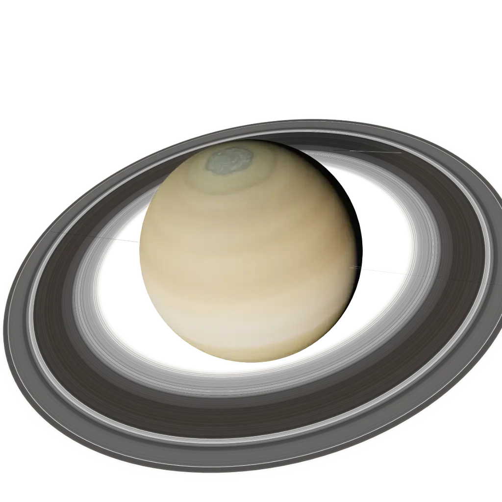

Sign guide · Earth · Cardinal
Capricorn
December 22 – January 19
“I use”
- Element
- Earth
- Modality
- Cardinal
- Ruler
- Saturn
- Symbol
- The Sea-Goat
Capricorn in today’s sky
Calculated from today’s sky with the same planet model as the 3D Observatory. Not a live feed.
Today’s Capricorn reading is calculated in your browser from real planetary positions. If this text remains, turn on JavaScript to see it, or read the full Capricorn guide below.
About Capricorn
Capricorn is the zodiac's mountain climber — ruled by Saturn, the planet of time, discipline, and earned things. This sign plays the long game by instinct: while others sprint and stall, Capricorn ascends at a pace it can sustain for decades. Beneath the dry wit and the serious surface is the most quietly determined sign of the twelve.
The astronomy of Capricorn
The factual layer: where Capricorn sits on the ecliptic.
Element, ruler, ecliptic band
the element of the tangible — earth signs are grounded, practical and built to last.
the initiating mode — cardinal signs start things and set the season in motion.

Saturn, the planet of time, discipline and earned achievement.
Saturn · our engine render
Capricorn is the 270°–300° band of the zodiac circle. The Sun crosses it around 22 Dec – 19 Jan each year. The exact day shifts by about a day from year to year, which is why the dates are approximate.
Capricorn in your chart
Most people meet Capricorn as a “star sign”. In a real birth chart it can appear in three very different places, and each one means something distinct.
Sun in Capricorn
Your core self: the “Capricorn side” people mean when they ask your sign. It shapes your basic character and what makes you feel most yourself.
Moon in Capricorn
Your inner, emotional world: how you feel, comfort yourself and respond in private. Two people with a Capricorn Moon share an emotional language, whatever their Sun sign.
Rising (Ascendant) in Capricorn
How you meet the world: your outward style and first impression. Your Rising is set by the exact time and place you were born, so it needs your birth time to know.
Capricorn strengths & challenges
Strengths
- Discipline that needs no audience
- Ambition with a realistic map
- Dry, surprising humour
- Responsibility carried without complaint
Challenges
- Work as the answer to every question
- Pessimism worn as realism
- Difficulty resting without guilt
- Withholding feelings to stay in control
In life
Love
Capricorn courts the way it builds: slowly, seriously, with intent to last. This sign distrusts fireworks and trusts demonstrated character — show up on time, keep your word, and mean it. Beneath the reserve is deep loyalty and an unexpectedly tender heart that only fully appears once the foundation is proven safe.
Traditionally a good match with Taurus, Virgo and Scorpio. See two-chart compatibility: Sun signs alone are not the whole story.
Career, friendship, shadow, growth
Career
Capricorn is the zodiac's executive: management, finance, government, engineering, any field with a ladder worth climbing. Authority sits naturally on this sign because it does the work first. The ideal Capricorn role has clear advancement, real responsibility, and results that compound.
Friendship
A Capricorn friend is the one you can actually rely on — the person who turns up when they said they would, gives advice worth following, and never disappears when things get hard. This sign is slow to befriend and dryly funny once it does, offering loyalty measured in decades rather than declarations. A Capricorn won't flatter you, but it will quietly help you build the life you want, because to a Capricorn that is what love looks like.
Shadow
The Capricorn shadow is the taskmaster within — the part that equates worth with output, treats rest as failure, and armours its tender heart behind achievement and control. Ambition hardens into coldness; realism curdles into pessimism; the climb becomes the only thing, and the summit never feels like enough. The growth edge is permission: to feel, to rest, and to believe that one is valuable for existing, not only for producing.
Growth
The inner path for Capricorn is from achievement to meaning — discovering that the mountain it has been climbing was never the point, and that a life is measured in more than what is built. This sign grows by letting people see its softness, by resting without guilt, and by loosening the grip of control enough to enjoy the view. When Capricorn climbs toward joy rather than away from inadequacy, the elder it is becoming finds peace.
Capricorn reference
Dates, ruler, FAQ
Capricorn at a glance
- Symbol
- The Sea-Goat
- Dates
- December 22 – January 19
- Element
- Earth
- Modality
- Cardinal
- Ruling planet
- Saturn
- Polarity
- Feminine / Yin
- Body part
- The bones, knees and joints
- Tarot
- The Devil
- Keyword
- “I use”
Frequently asked
What are the Capricorn zodiac dates?
Capricorn season runs December 22 – January 19. People born in this window have their Sun in Capricorn.
What element and ruling planet is Capricorn?
Capricorn is a Earth sign of the Cardinal modality, ruled by Saturn. Its symbol is The Sea-Goat.
Which signs are most compatible with Capricorn?
Capricorn is traditionally most compatible with Taurus, Virgo, Scorpio. Full synastry depends on the complete birth charts of both people, not Sun signs alone.
What are the main Capricorn personality traits?
Capricorn is known for being discipline that needs no audience, ambition with a realistic map, dry, surprising humour. Its growth edges include work as the answer to every question and pessimism worn as realism. As a Cardinal Earth sign ruled by Saturn, Capricorn carries the keyword “I use”.
Is Capricorn rare?
No zodiac sign is truly rare: every sign covers about a month, so each accounts for roughly one twelfth of birthdays. Small global birth-rate variations by season make some signs marginally more common than others, but Capricorn is no rarer than any other Sun sign. Your full birth chart, however, is genuinely one of a kind.
What is the Capricorn symbol and ruling body?
The symbol of Capricorn is The Sea-Goat, and it is ruled by Saturn. Its polarity is feminine / yin, it is traditionally associated with the bones, knees and joints, and its corresponding tarot card is The Devil.
Every sign
Tap a tile to open that sign’s guide and today’s sky.